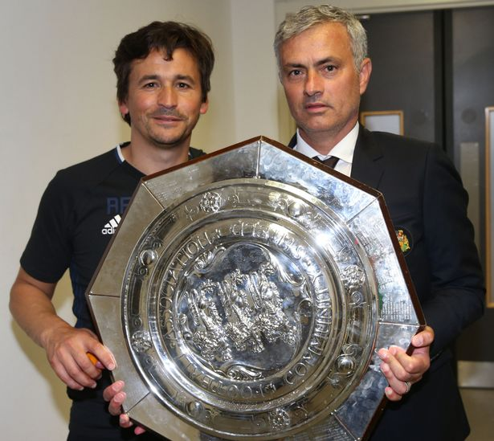

Match & Player news
10/12/2016 10:24, Report by Ivan Spasov
MOURINHO PLEASED TO HAVE MORE OPTIONS
Manchester United manager Jose Mourinho is pleased to have Eric Bailly back in his plans ahead of the Europa League clash with Zorya Luhansk.
The Ivory Coast international suffered a knee injury against Chelsea in October but was an unused substitute in last Sunday's 1-1 draw at Everton. Bailly's return gives the boss another option in the centre of defence, where Phil Jones and Marcos Rojo have combined well of late.
The Reds need a point to guarantee qualification for the knockout stages of the competition, regardless of the result of the other Group A clash between Feyenoord and Fenerbahce.
"It is important for the team to have more options," the manager told MUTV on Wednesday. "I think Jones and Rojo are playing amazingly well but they are playing every match in a row.
"Now we have Bailly back but we know we are going to lose him in a few weeks because he goes to the African Cup of Nations. But, in this period of Christmas, where we play every three days, it's very important to have one more option."
When asked at the pre-match press conference about the players still in Manchester, such as Antonio Valencia, Matteo Darmian and Michael Carrick, the boss replied: "The players I had to leave out to protect, I left them in Manchester. The ones that I brought, I brought them to play."
On the tie, Mourinho added: "We know that it's a crucial match for us. If we lose the match, we can be out. And we don't want to be out, we want to go on in the competition. Zorya is out but they have a match to play and I believe that they are going to try to win the match as well.
"Today we are in the competition, tomorrow we want to win it and we want to go to the knockout [stages]. We want to try to go as far as possible, step by step and the first step is a difficult one, to qualify from a very difficult group."